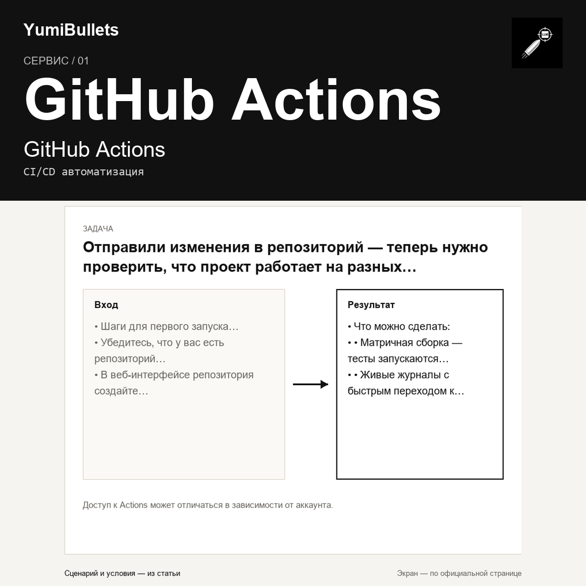

GitHub Actions: автоматизация CI/CD после push
Отправили изменения в репозиторий — теперь нужно проверить, что проект работает на разных операционных системах и версиях среды. Делать это вручную долго: запускать тесты по очереди на Windows, macOS, Linux, ждать результатов, искать ошибки в логах. GitHub Actions берёт рутину на себя: сервис автоматизирует рабочие процессы сборки, тестирования и деплоя прямо внутри GitHub, не требуя отдельной инфраструктуры.